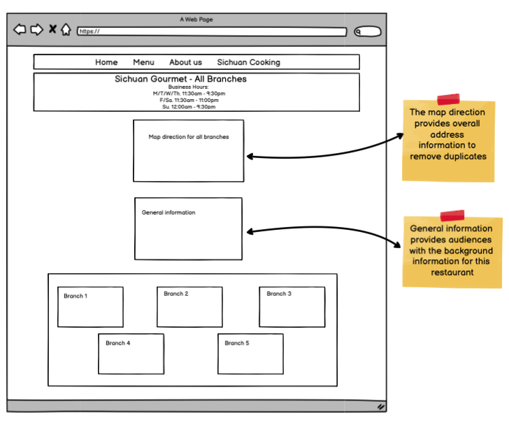

Link for the initial website: laosichuan.com
Problems of the website:
Accessibility:
WAVE report points out several errors with the current page. The main errors are missing alternative text and low contrast. Besides, it figures out some redundant link describing the address of each restaurant. No results available on screen-reader
Low-fidelity Wireframing
Desktop
Tablet
Mobile
High-Fidelity Prototyping
Desktop
Tablet
Mobile
Visual Design Style Guide
Link for the redesigned website: Click Here!
Observations: